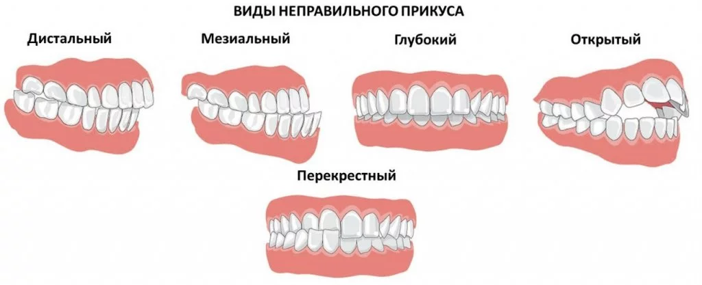
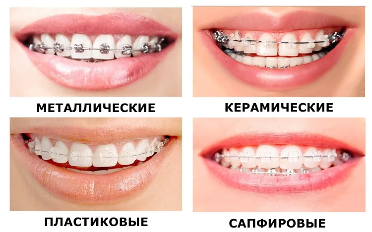

Як виправити неправильний прикус, методики лікування
- Вступ
- Процедури виправлення ортогнатії
- Метод виправлення зубів капою
- Вирівнювання зубів лазером
- Выравнивание зубов хирургическим методом
Якщо залишити зуби в неправильному положенні, то вони можуть стати причиною багатьох хвороб: шкодити щелепну кістку, м'язи, на тлі цього може розвиватися гінгівіт, пародонтоз, карієс, головний біль, підвищуватися стирання зубів. Тому потрібно вирівнювати зуби навіть після 25 років.
Дешевше вийде вирівняти зуби і отримати гарну посмішку, ніж лікувати наслідки ортогнатії.
Медицина пропонує кілька видів вирівнювання зубів.
Процедури виправлення ортогнатії
Розрізняють види викривлення зубів:
- Дистальний прикус - це надто розвинена верхня щелепа або погано розвинена нижня.
- Мезіальний - це нижня щелепа надмірно висунута вперед, причому верхня губа западає, а підборіддя виступає вперед.
- Відкритий прикус - це щілина у верхньому та нижньому ряді зубів.
- Глибокий прикус - це верхні різці при закритій щелепі перекривають нижні більш ніж на половину, що сприяє стирання зубів.
- Перехресний прикус – це усунення щелепи убік, через це з'являється асиметричність обличчя.
Ефективним методом вирівнювання зубів є носіння брекетів, які складаються з дужок, об'єднаних силовою дугою. Дуга впливає на зуби і затискає їх у потрібному положенні, дужки прикріплюються спеціальним клеєм. Брекети можна підбирати під колір зубів, вони відрізняються один від одного лише ціною. Зуби вирівнюються через 1-3 роки, залежно від складності ситуації, кожні два тижні при відвідуванні лікаря лікар змінює положення дуги брекетів.
Брекети бувають наступних видів:
- металеві;
- пластикові;
- керамічні;
- сапфірові;
- саморегулюючі;
- лінгвальні.
Найдоступніші за ціною металеві брекети мають міцну конструкцію, але виглядають не естетично.
Пластикові мають менш міцну конструкцію, згодом тьмяніють.
Керамічні виготовляються під колір зубів, не фарбуються.
Сапфірові не помітні на зубах, не міцні можуть ламатися, потрібна обережність при гігієні ротової порожнини.
Саморегулюючі це версія металевих брекетів, але ціна їх у 2 рази дорожча, за ними простіше доглядати.
Лінгвальні - найдорожчі, їх не видно на зубах, вони кріпляться із внутрішнього боку зубів.
Метод виправлення зубів капою
Виправити неправильний прикус можна без брекетів. Після 30 років зуби можна вирівняти прозорою капою, яка непомітна на зубах. Капа виготовлена з прозорого полімеру, має знімну конструкцію, не заважає у повсякденному житті, її не бачать оточуючі, при носінні зубна емаль не псується. Капа знімається під час чищення зубів. При лікуванні зубів необхідно міняти капу кожні 2 тижні. Її виготовляють зі зліпування зубів з урахуванням їхнього положення. Для лікування зубів елайнерами знадобиться 40 крапель, які створюються прогресивними технологіями.
Елайнери формують гарну посмішку, працюють з такими видами неправильного прикусу:
- прибирають щілини між зубами;
- змінюють положення зубів;
- лікують усунення щелепи;
- закріплюють результат після лікування брекетами.
Лікар оцінює стан зубів і дивиться чи можливо лікування елайнерами. Знімає зліпок скануючи ротову порожнину за допомогою рентгена або комп'ютерної томограми. Проводиться комп'ютерне моделювання зубів та розробляється комплекс кап на весь період лікування. Елайнери добре приклеюються до зубів, їх краще одягати проти ночі. При прийомі їжі можна знімати промивати під проточною водою, потім не забувати надягати назад.
Переваги вирівнювання зубів капою:
- Короткий період лікування.
- Не помітні на зубах.
- Немає відчуття стороннього тіла та дискомфорту.
- Дозволяє виправити неправильний прикус зубів (перехресне, глибоке, мезіальне викривлення).
- Комп'ютерне моделювання прогнозує результати лікування.
- Видно результат після лікування.
З недоліків вирівнювання зубів елайнерами є висока ціна і при серйозних порушеннях прикусу лікування буде неефективним.
Вирівнювання зубів лазером
Лазер використовують як допоміжну терапію під час лікування неправильного прикусу. Після вирівнювання зубів пластиною на них йде навантаження, що сприяє мікро травмам. Лазер допомагає уникнути ускладнень після лікування зубів пластиною та знімає запалення. Їм також знімають виміри зубного ряду.
Вирівнювання зубів хірургічним методом
Операцію на щелепи проводять у тому випадку, якщо неможливо виправити зуби брекетами, капою, або щелепа деформувалася після травми. У процесі операції робиться надріз усередині щелепи і її пересувають у потрібне положення, змінюючи форму підборіддя, зуби вирівнюються.
Консультація у ортодонту допоможе зробити правильний вибір методу лікування зубів.